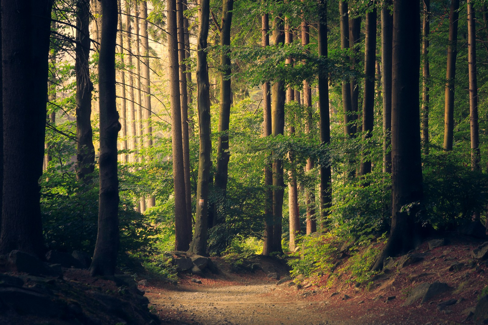
Tu hogar tras el Camino
Retiro post-Camino de Santiago en una aldea gallega. Descansa, reflexióna y prepara el regreso a casa.
Donde termina el Camino empieza otro viaje
Después de cientos de kilómetros, tu cuerpo pide descanso y tu mente necesita espacio para entender lo que has vivido. A Casa do Raposito te ofrece ese tiempo: 3 a 5 días de calma en una aldea gallega, con comidas caseras, conversaciones auténticas y el ritmo de la vida rural.
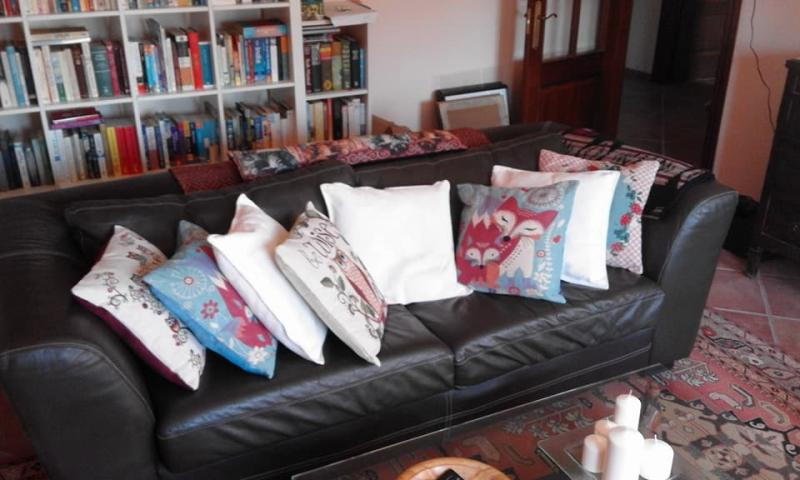
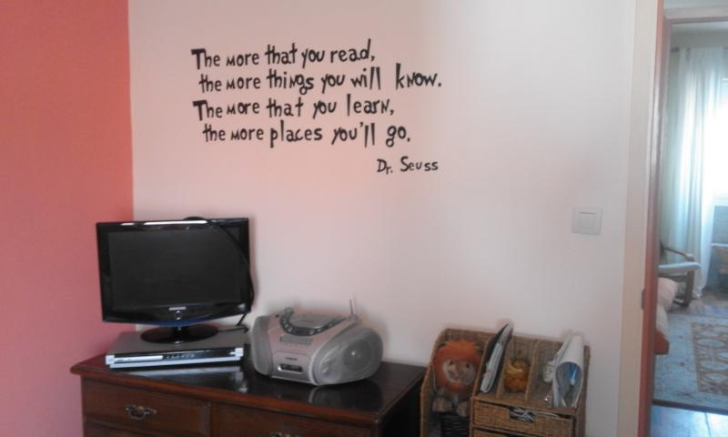
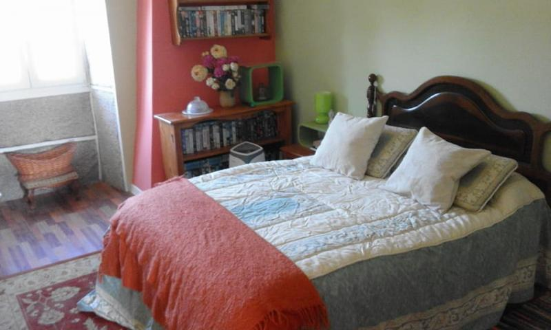
Un hogar, no un hotel
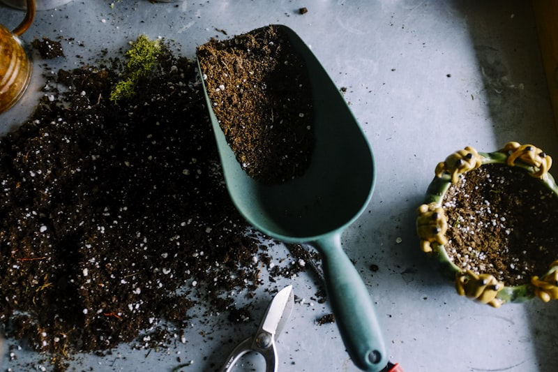
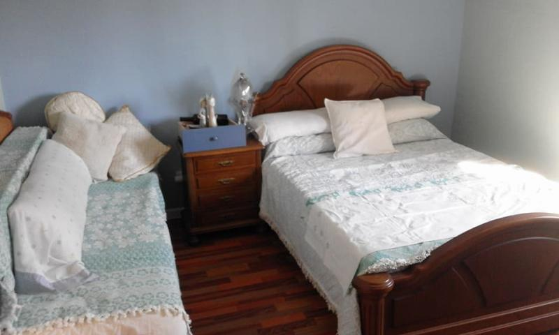
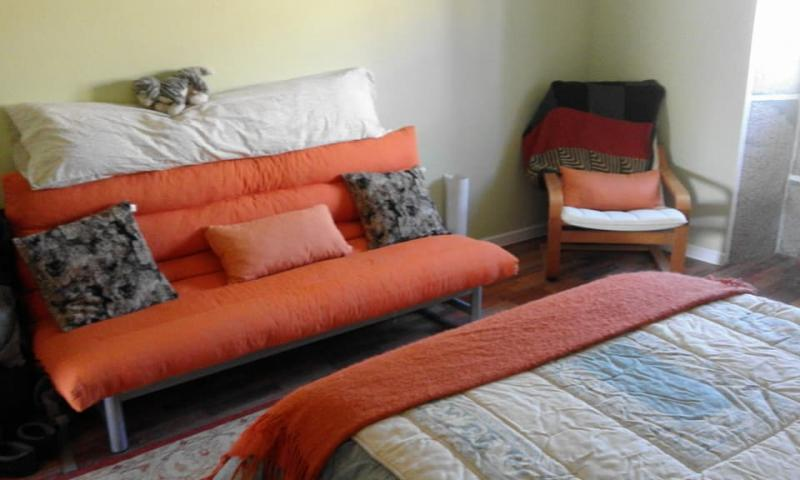
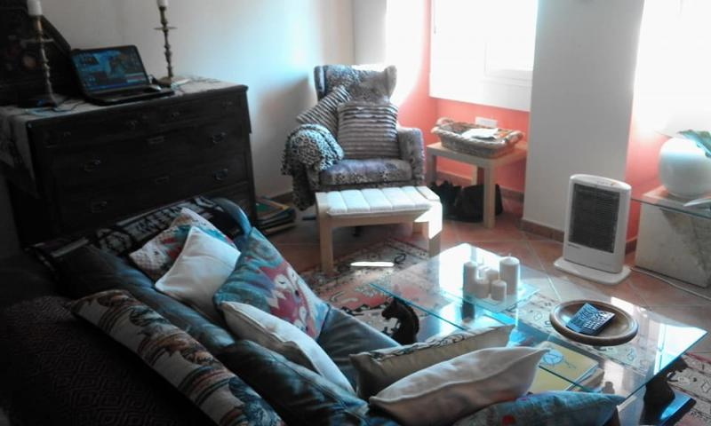
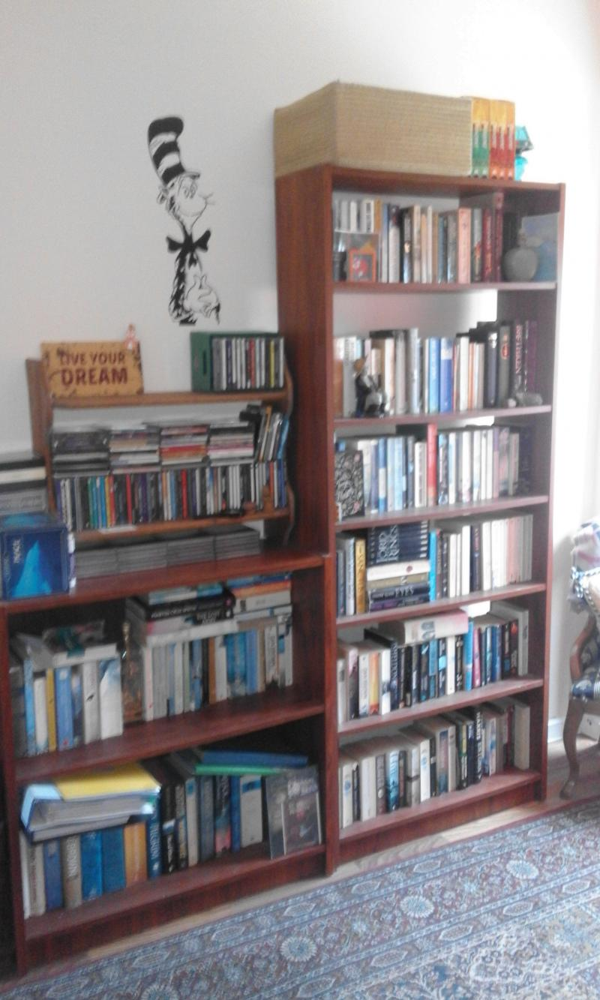
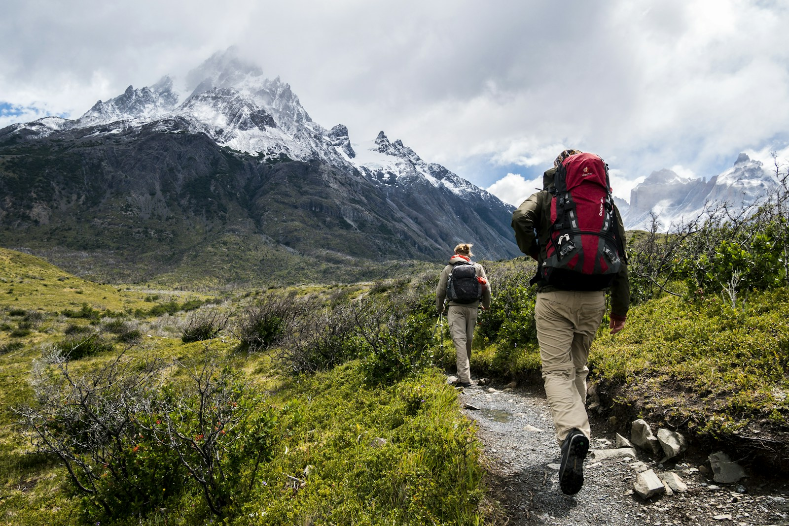
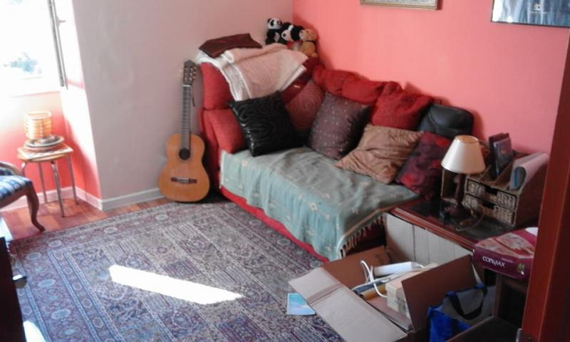
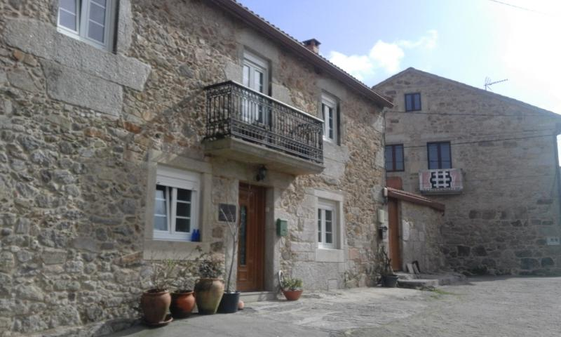
Voces del Camino
Testimonios reales de peregrinos que han descansado en A Casa do Raposito.
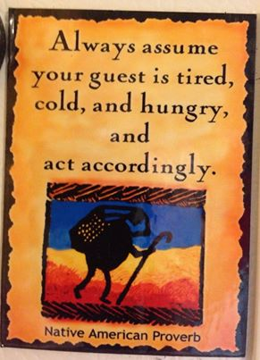
Tracy Saunders
Escritora, psicoterapeuta, peregrina cuatro veces y alma de A Casa do Raposito.
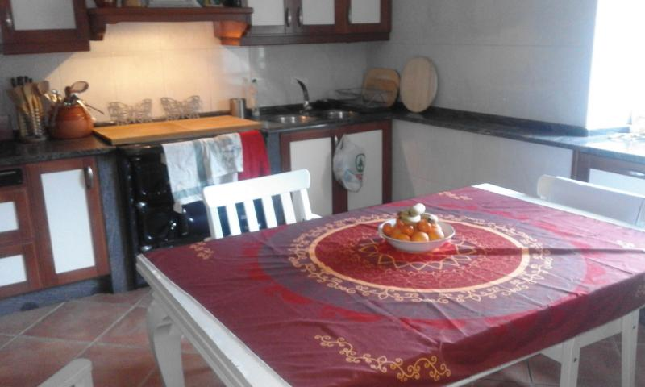
Cuatro caminos, un hogar
Tracy Saunders es escritora, peregrina cuatro veces, psicoterapeuta y profesional de la hipnosis clínica. Tras dejar Costa Rica, vivir 23 años en Canadá y recorrer Europa, encontro su hogar definitivo en una pequeña aldea gallega cerca de Muxia.
Convencida de que el Camino no termina en Santiago ni en Fisterra, abrio las puertas de su casa para que los peregrinos pudieran descansar, reflexiónar y procesar la experiencia antes de volver a la vida cotidiana. Asi nacio A Casa do Raposito: un retiro privado, no comercial, que funciona con un modelo de donativo.
Tracy es autora de varios libros, entre ellos Pilgrimage to Heresy, St James' Rooster, The Indalo Quest y The Little Fox House Cookbook, cuyos beneficios se reinvierten en el cuidado de los peregrinos.
Sus libros
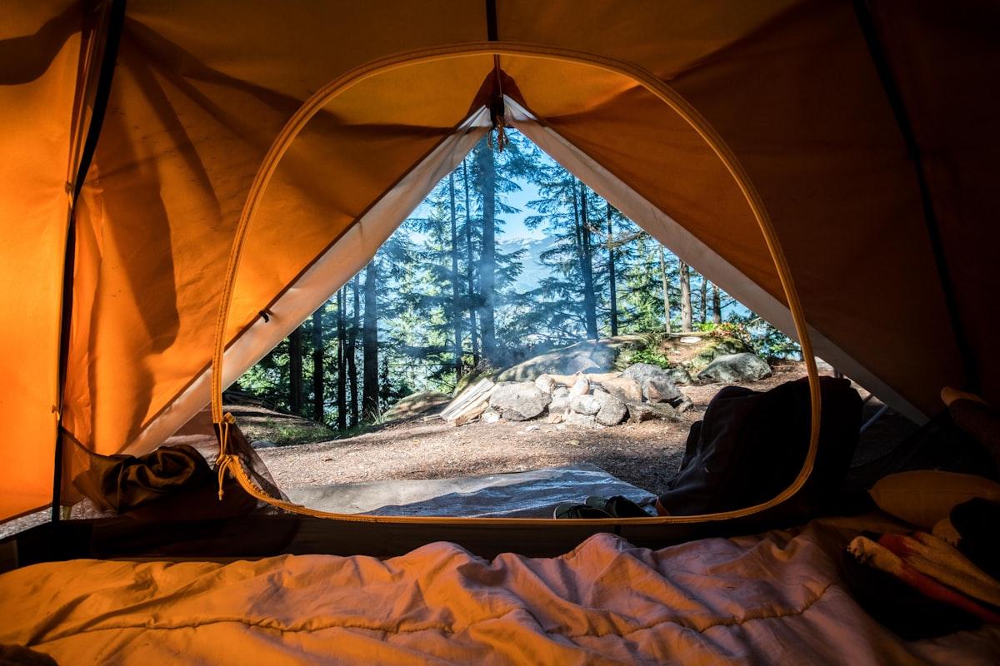
El camino de vuelta a casa
Por que necesitas más que llegar a Santiago.
Después de 900 kilómetros, no estas preparado para volver
Has caminado durante semanas. Has dormido en albergues. Has compartido comida, historias y ampollas con desconocidos que ahora son familia. Y de repente, todo termina.
Vuelves a casa. Tu familia no entiende del todo lo que has vivido. Los ojos de tus amigos se nublan cuando hablas del Camino. Ya no eres la misma persona que salio de casa, pero el mundo de casa sigue exactamente igual.
A Casa do Raposito existe para ese momento. Para darte 3 a 5 días más: para parar, descansar, escribir en tu diario y prepararte para la reentrada en la vida real.
Descanso, reflexión y comunidad
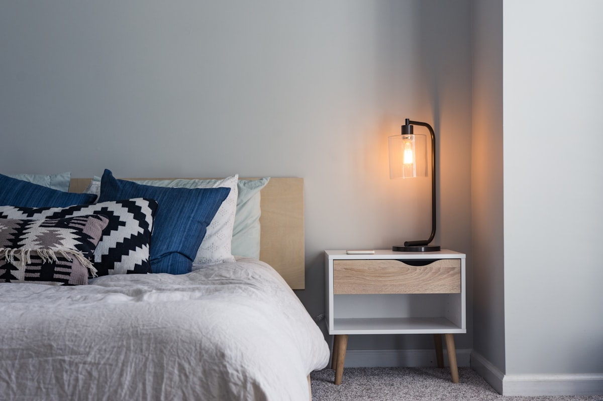
Reserva tu estancia
El espacio es limitado (máximo 5 peregrinos). Recomendamos reservar con antelación.
Desde Muxia, camina hacia Fisterra por el Camino con el oceano a tu derecha. Pasa el campo de futbol y la zona arbolada. Evita la carretera que sube a la derecha. Toma el primer desvio a la izquierda que sube una ligera cuesta. Sigue ese camino unos 4 km hasta un cruce en T. Gira a la derecha, pasa Anobres y el aserradero. Toma el siguiente desvio a la izquierda junto a Casa da Lema. La casa es el número 71.
En autobus: Hay dos autobuses diarios entre Muxia y Fisterra que paran casi en la puerta. Dile al conductor: Panaderia Castreje o Casa da Lema.
Todo lo que necesitas saber
Cuánto cuesta alojarse?
A Casa do Raposito funciona con un modelo donativo (pay it forward). No hay tarifa fija; cada peregrino contribuye segun sus posibilidades. El alojamiento incluye comidas caseras, vino y uso de todas las instalaciones.
Cuánto tiempo puedo quedarme?
Las estancias son de 3 a 5 días, pensadas para que el peregrino descanse y procese la experiencia del Camino antes de volver a casa.
Es necesario reservar?
Si, se recomienda reservar con antelación. El espacio es limitado (máximo 5 peregrinos adicionales). Contacta por email o teléfono.
Cómo llego desde Muxia?
Desde Muxia, camina hacia Fisterra unos 9 km. También hay dos autobuses diarios que paran cerca de la casa. Mas detalles en la sección de direcciónes.
Es un albergue religioso?
No. A Casa do Raposito es un retiro privado, no confesional, abierto a peregrinos de cualquier creencia o ninguna. Es la casa particular de Tracy Saunders.
Esta abierto todo el año?
Si. A Casa do Raposito permanece abierto los 365 días del año.
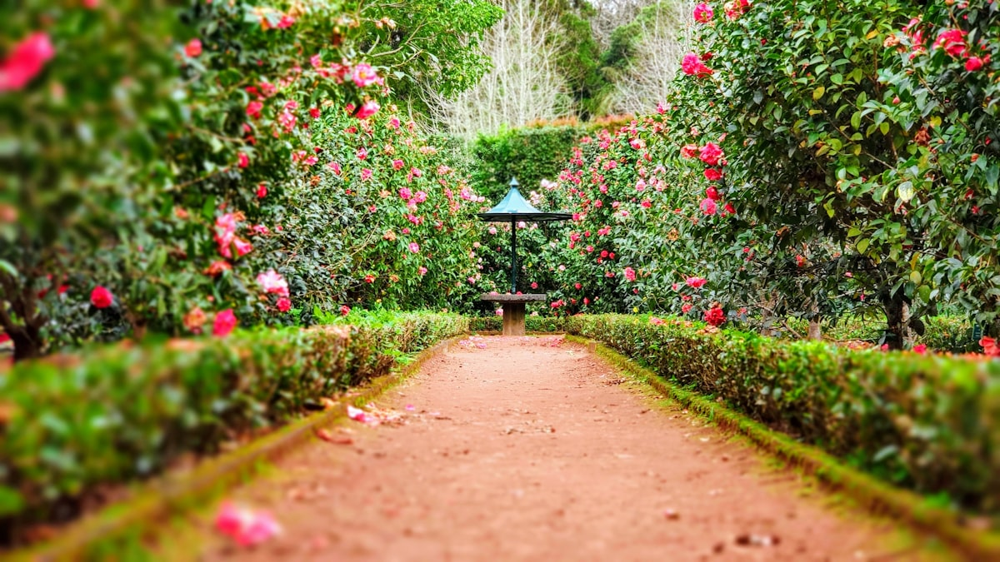
Donar y colaborar
A Casa do Raposito sobrevive gracias a la generosidad de quienes creen en este proyecto.
Cada pequeño gesto cuenta
A Casa do Raposito no recibe subvenciones ni ayudas de ningun municipio, organizacion religiosa ni entidad publica. Es un proyecto completamente independiente, sostenido por las contribuciónes voluntarias de los peregrinos y las personas que creen en lo que hacemos.
Los peregrinos comen mucho. Lavar y secar produce facturas de electricidad considerables. Tu contribución, por pequeña que sea, ayuda a mantener las puertas abiertas para el siguiente peregrino que llegue cansado y sin un euro.
Quieres colaborar?
Contacta directamente con Tracy para conocer las formas de colaborar. Puedes hacer una donacion economica, enviar productos, o simplemente compartir la existencia de este proyecto con otros peregrinos.
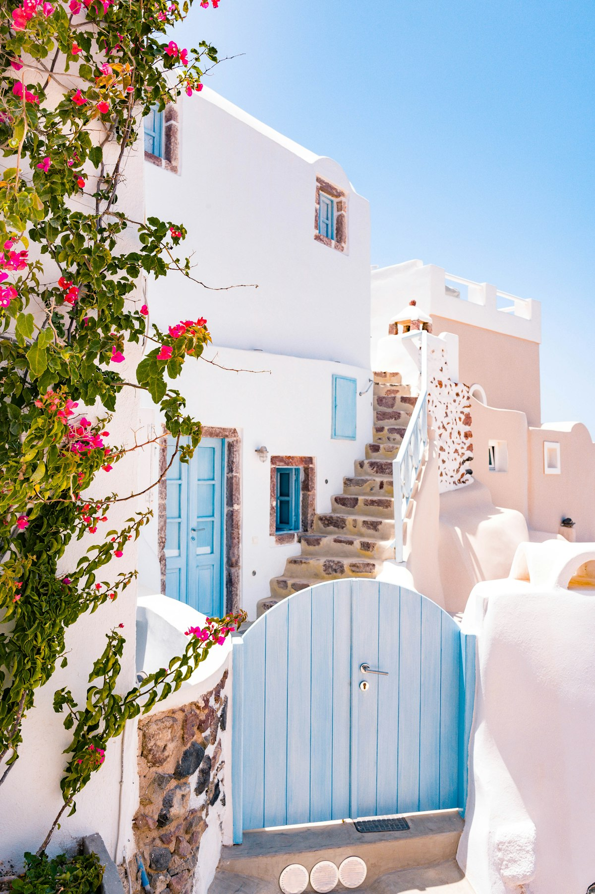
Te has perdido?
Este rincón no existe. Pero tu estancia te esta esperando.
Volver al inicio